不要写死，不要写死，不要写死!!!
APP动态配置
不要写死
不要写死，一个永恒的话题。动态化，也是一个涵盖了界面，功能，数据，配置诸多方面的一个宽泛话题。
这里不细讲动态化的具体实践，各家都是各凭本事，参考
知乎移动端动态化方案全览 https://www.infoq.cn/article/RRvP-Kli8AwEx6TuB1aG
支付宝移动端动态化方案实践 https://segmentfault.com/a/1190000017072158
有赞 App 动态化配置中心实践 https://zhuanlan.zhihu.com/p/26282860
天猫 App 的动态化配置中心实践 https://www.infoq.cn/article/app-dynamic-configuration/
动态配置为APP带来了三个新的能力
- 补丁热修复
- 灰度测试
- AB测试
动态化体系缺不了灰度能力 ，灰度能力是动态化体系的基础设施，不可或缺。灰度系统的几大重要能力包括：
- 选择灰度范围的能力
- 扩大灰度范围的能力
- 回滚的能力。
灰度范围简单的说就是一个白名单，如何决定白名单是需要根据业务调整的，这意味着灰度系统需要有足够的能力各种各样的白名单。灰度系统一般都不是单独存在的，可以将灰度系统拆成两部分，灰度能力和白名单系统。灰度能力需要嵌到各个系统中去，让各个系统根据自己的需要实现，而白名单系统一般是可以单独搭建的，让各个系统共用一个白名单系统有助于各个动态系统互相配合使用。
AB系统相比于灰度系统最大的不同在于，AB系统关注的指标和灰度系统不一样。灰度系统考虑更多的是系统的稳定性，新版本会不会导致线上问题，而AB系统一般要关注的都是业务指标，比如A需求和B需求相比较，哪个引导用户购买的效果更好此类的。因此AB系统的关键指标和灰度系统有所不同。
AB测试
什么是AB测试
AB测试是对比两个或多个变体在同一地方好坏的方法，并且需要保证样本的同时和同质。
同时性：两个变体是同时投入使用的，而不是今天使用A变体，明天使用B变体，这样会有其他因素影响。比如，对于电商网站来说今天没有活动，而明天是双十一，在这个条件下我们不能判断变体B比变体A好。
同质性：两个变体对应的使用群体需要保证尽量一致。比如，想想一个极端场景：变体A里全是女性，变体B中全是男性，我们根本无法判断出来究竟是方案影响了最终效果还是性别。
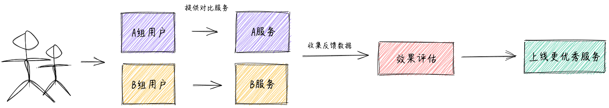
理论支撑：中心极限定理，意思是独立同分布的随机变量的和服从正态分布。对于 AB 测试，我们比较的是两组样本的平均表现，AB 测试保证 AB 两组某个因素不一样 (这个就是我们要验证的优化点)，AB 两组其他很多未知影响因素一样 (这些因素是独立同分布的随机变量)，当 AB 两组样本足够多时，这些其他因素产生的效果是满足同一正态分布的，因此可以认为对要验证的变量的作用是相互抵消的，这样待验证因素 (即我们的控制变量) 的影响就可以比较了，因此我们就可以通过实验来验证优化是否有效。
AB 测试的价值
- 为评估产品优化效果提供科学的证据
- 借助 AB 测试可以提升决策的说服力
- AB 测试可以帮助提升用户体验和用户增长
- AB 测试可以帮助提升公司变现能力
什么时候需要 AB 测试
- 必须是有大量用户的产品或者功能点
- 进行 AB 测试的代价 (金钱 & 时间) 可以接受
- 有服务质量提升诉求
- 变量可以做比较好的精细控制
一些要注意的坑
- AB 测试一定要具备统计学意义上“显著”的置信度
- 用户体验一致性
- 测试周期要足够长
- 损失最小性原则
- 处理好 AB 测试与缓存的关系
AB测试模块
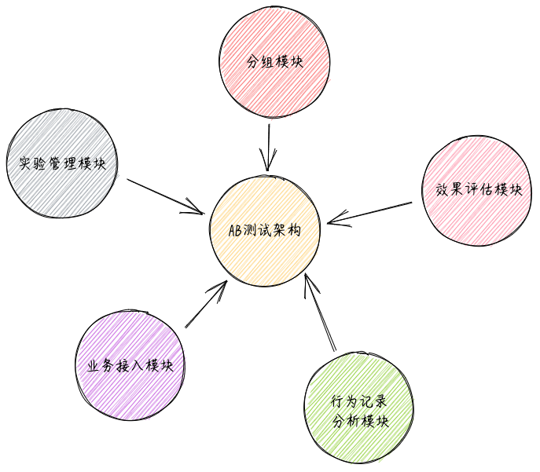
分组模块
分组模块的目的是根据各种业务规则，将流量 (用户) 分为 AB 两组 (或者多组)。可以说分组模块是 AB 测试最核心的模块，好的 AB 分组方案可以让流量分配的更均匀随机。同时需要具备根据用户、地域、时间、版本、系统、渠道、事件等各种维度来对请求进行分组的能力，并且保证分组的均匀性和一致性。
试验管理模块
实验管理模块的目的是让产品经理、运营人员或者开发人员方便快速的创建 AB 测试案例，增加新的 AB 测试分组，调整 AB 测试方案各个组的比例，让 AB 测试跑起来。同时也用于管理 AB 测试平台用户创建、权限管理，让用户具备编辑、拷贝、使用 AB 测试实验的能力，做到高效易用。
业务接入模块
一般通过提供一个 AB 测试 SDK 或者 AB 测试 Restful 接口的形式供业务方使用。
行为记录分析模块
行为记录分析模块主要的目的是当某个产品功能的 AB 测试在线上运行时，记录用户的在 AB 测试模块的行为，将用户的行为收集到数据中心，借助大数据分析平台来做各种效果评估指标的统计分析与评估，最终确定新的优化点是否是有效的。
效果评估模块
AB 测试效果评估组件是用于跟踪 AB 测试的效果，根据 AB 测试效果来做出业务、运营、算法调整的决策。
流程实践
如何分桶
如何进行分组（分桶）：假设现在有12个人（Customer）；有6个桶（Bucket），每个用户在访问实验时，会先进入到分流算法中，由算法来决定分到哪个桶里面，都分完后最理想的是每个桶里正好有2个人。（实际上基于大数定律原理，数据量越大分配的会越平均）
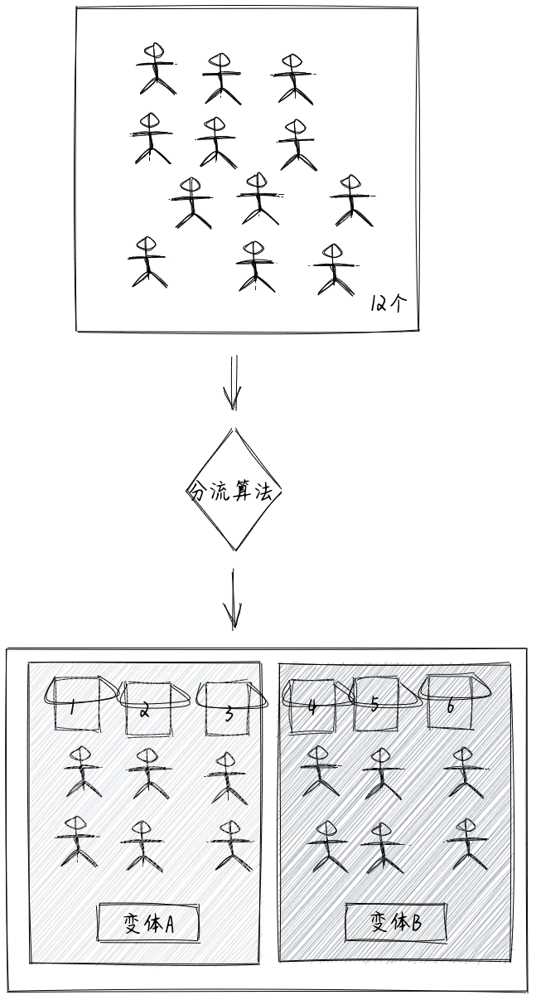
假设每个变体的流量是50%，变体A我们假定对应的是三个桶1、2、3桶，变体B也是对应的是4、5、6桶。变体A选中的概率是50%，所以只要对应任意三个桶即可。
可重叠分层分桶方法
如果用户只被分流了一次（分入6个桶中），只做一次孤立的实验是没有问题的，但考虑到长期交叉、连续的实验，这样做有很大的问题。
- 这种设计只能进行单层实验，也就是说一份流量只能通过一个实验。
如果实验人员选择了在任意一个桶中同时进行 X, Y 两个实验的话，那两个实验的结果就会相互干涉，导致最终结果不可信。例如：在尾号为 001 的桶里进行了两个促销活动“降价10%”和“满100减10块”的实验，最终 001 桶的用户订单数比其它桶高，那到底是哪个促销更有效果呢？
- 这种设计在长期会造成桶间用户行为有偏。
也许刚开始因为其随机性，桶间用户行为差异很小。但第一个实验过后，桶间就开始有了行为差异——这也是 ABTest 的目标。N 个实验过后，桶间行为的差异可能就变得非常大了。
比如你总是在 001 桶的用户上实验幅度较大的促销活动，那么 001 桶的用户留存就会显著高于其它桶。那实验人员为了让实验效果更好看，可能会偷偷地继续选择 001 桶进行实验。 - 这种设计的实验效率太低。因为一份流量只能通过一个实验，无法对流量进行充分的利用。
将流量分成可重叠的多个层。因为很多类实验从修改的系统参数到观察的产品指标都是不相关的，完全可以将实验分成互相独立的多个层。例如 UI 层、推荐算法层、广告算法层，或者开屏、首页、购物车、结算页等。
单单分层还不够，在每个层中需要使用不同的随机分桶算法，保证流量在不同层中是正交的。也就是说，一个用户在每个层中应该分到哪个桶里，是独立不相关的。具体来说，在上一层 001 桶的所有用户，理论上应该均匀地随机分布在下一层的 1000 个桶中。
通过可重叠的分层分桶方法，一份流量通过 N 个层可以同时中 N 个实验，而且实验之间相互不干扰，能显著提升流量利用率。
流量分配
- 不影响用户体验：如 UI 实验、文案类实验等，一般可以均匀分配流量实验，可以快速得到实验结论
- 不确定性较强的实验：如产品新功能上线，一般需小流量实验，尽量减小用户体验影响，在允许的时间内得到结论
- 希望收益最大化的实验：如运营活动等，尽可能将效果最大化，一般需要大流量实验，留出小部分对照组用于评估 ROI
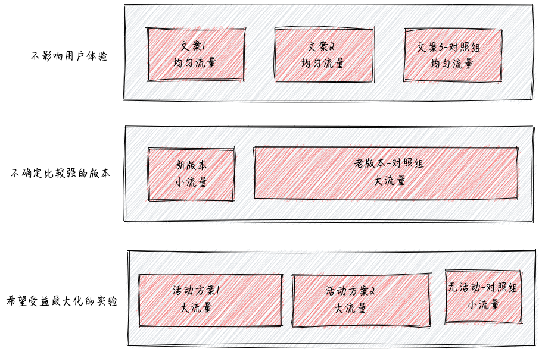
根据实验的预期结果，大盘用户量，确定实验所需最小流量，可以通过这个网站专门计算所需样本量。
例1：
以次日留存率为例，目前大盘次日留存率 80%，预期实验能够提升 0.2pp
（这里的留存率可以转换为点击率、渗透率等等，只要是比例值就可以，如果估不准，为了保证实验能够得到结果，此处可低估，不可高估，也就是 0.2pp 是预期能够提升地最小值）
网站计算，最少样本量就是 63W
（这里的最少样本量，指的是最少流量实验组的样本量）
如果我们每天只有 5W 的用户可用于实验（5W 的用户，指最少流量实验组是 5W 用户），63/ 5 = 13 天，我们需要至少 13 天才能够得到实验结论
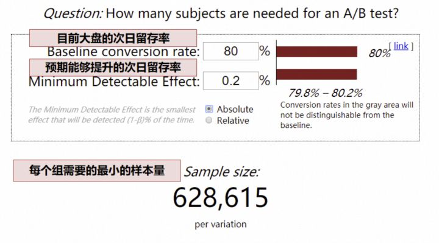
例2：
如果我们预期提升的指标是人均时长、人均 VV 等，可能就比较复杂了，我们需要运用 t 检验反算，需要的样本量：
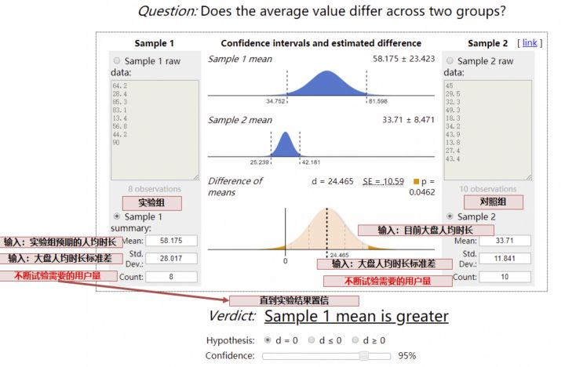
实验效果评估
从4个方面评估
- 方案 1 和方案 2，哪个效果更好？
- 哪个 ROI 更高？
- 长期来看哪个更好？
- 不同群体有差异吗？
1.效果比较：
对于留存率、渗透率等漏斗类指标，采用卡方检验：
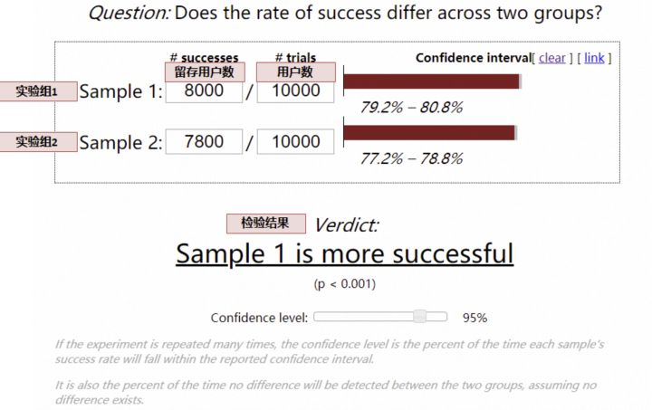
对于人均时长类等均值类指标，采用t 检验：
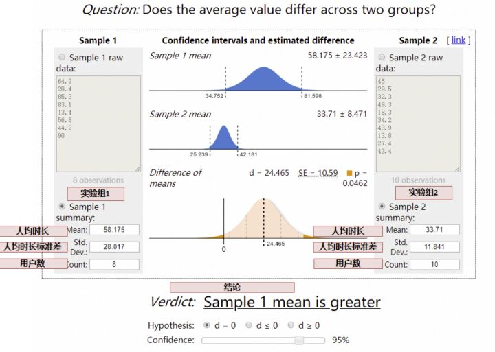
2.ROI
对于 ROI 的计算，成本方面，每个实验组成本可以直接计算，对于收益方面，就要和对照组相比较，假定以总日活跃天（即 DAU 按日累计求和）作为收益指标，需要假设不做运营活动，DAU 会是多少，可以通过对照组计算，即：
- 实验组假设不做活动日活跃天 = 对照组日活跃天 * （实验组流量 / 对照组流量）
- 实验组收益 = 实验组日活跃天 - 实验组假设不做活动日活跃天
这样就可以量化出每个方案的 ROI。
3.长期效果
这里就要考虑新奇效应的问题了，一般在实验上线前期，用户因为新鲜感，效果可能都不错，因此在做评估的时候，需要观测指标到稳定态后，再做评估。
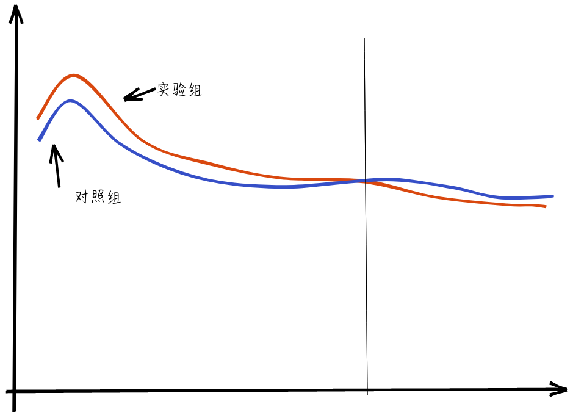
例如有的时候出现，刚刚上线前期，实验组效果更好，但是经过一段时间，用户的新鲜感过去了，实验组的效果可能更差，因此，从长远收益来看，我们应该选择对照组，是实验组的新奇效应欺骗了我们，在做实验分析时，应剔除新奇效应的部分，待平稳后，再做评估
4.用户群体差异
很多情况下，对新用户可能实验组更好，老用户对照组更好；对年轻人实验组更好，中年人对照组更好，分析实验结论时，还要关注用户群体的差异。
高级实验
对于长线业务，可能同时有数十个实验同时进行，不但对比每项小迭代的差异，同时对比专项对大盘的贡献量、部门整体对大盘的贡献量，这样就需要运用到了实验的层域管理模型。
- 对比每个产品细节迭代的结果
- 对比每个专项在一个阶段的贡献
- 对比整个项目在一个阶段的贡献
多个活动交集量化的实验设计
在多团队合作中，经常遇到多业务交集的问题，以春节活动为例，老板会问：
- 春节活动-活动 A 子活动贡献了多少 DAU？
- 春节活动-活动 B 子活动贡献了多少 DAU？
- 春节活动总共贡献了多少 DAU？
严谨一点，我们采用了 AB 实验的方式核算，最终可能会发现一个问题：春节活动各个子活动的贡献之和，不等于春节活动的贡献，为什么呢？
- 有的时候，活动 A 和活动 B，有着相互放大的作用，这个时候就会 1+1 > 2
- 还有的时候，活动 A 和活动 B，本质上是在做相同的事情，这个时候就会 1+1 < 2
这个时候，我们准确量化春节活动的贡献，就需要一个【贯穿】所有活动的对照组，在 AB 实验系统中通俗称作贯穿层。
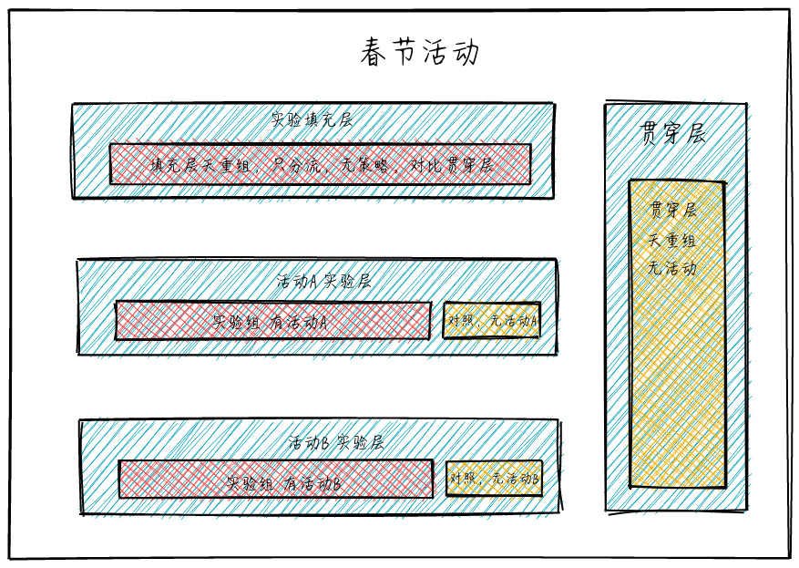
（说明：实验中，各层的流量是正交的，简单理解，例如，A 层的分流采用用户 ID 的倒数第 1 位，B 层的分流采用用户 ID 的倒数第 2 位，在用户 ID 随机的情况下，倒数第 1 位和倒数第 2 位是没有关系的，也称作相互独立，我们称作正交。当然，AB Test 实验系统真实的分流逻辑，是采用了复杂的 hash 函数、正交表，能够保证正交性。）
这样分层后，我们可以按照如下的方式量化贡献：
- 计算春节活动的整体贡献：实验填充层-填充层填充组 VS 贯穿层-贯穿层填充组
- 计算活动 A 的贡献：活动 A 实验层中，实验组 VS 对照组
- 计算活动 B 的贡献：活动 B 实验层中，实验组 VS 对照组
业务迭代的同时，如何与自身的过去比较
上面谈到了【贯穿层】的设计，贯穿层的设计其实不但可以应用在多个活动的场景，有些场景，我们的业务需要和去年或上个季度的自身对比，同时业务还不断在多个方面运用 AB Test 迭代。
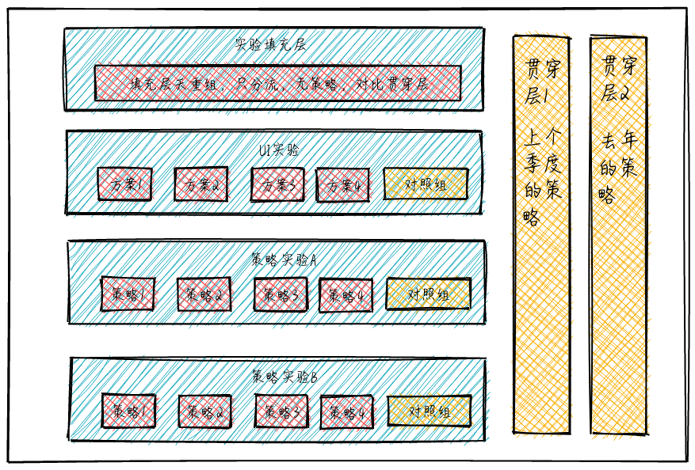
类似与上面这种层次设计，在推荐系统中较为常见，在某一些产品或系统中，贯穿层不能够完全没有策略，那么采用去年或上个季度的策略，代表着基准值，从而量化新一个周期的增量贡献
我们可以量化：
- 每个小迭代对整个系统的贡献：实验层中的实验组 VS 对照组
- 周期内，系统全部迭代与上个周期的比较：实验填充层 VS 贯穿层 1（或贯穿层 2）
- 同时，可以量化去年策略的自然增长或下降，以衡量旧有系统是否具有长期的适用性（作为系统设计者，更应鼓励设计具有长期适应性的系统）：贯穿层 1（上个季度的策略）VS 贯穿层 2（去年的策略）
业界流行的 AB 测试架构实现方案
通过定制的 AB Test SDK 来处理 AB 测试业务
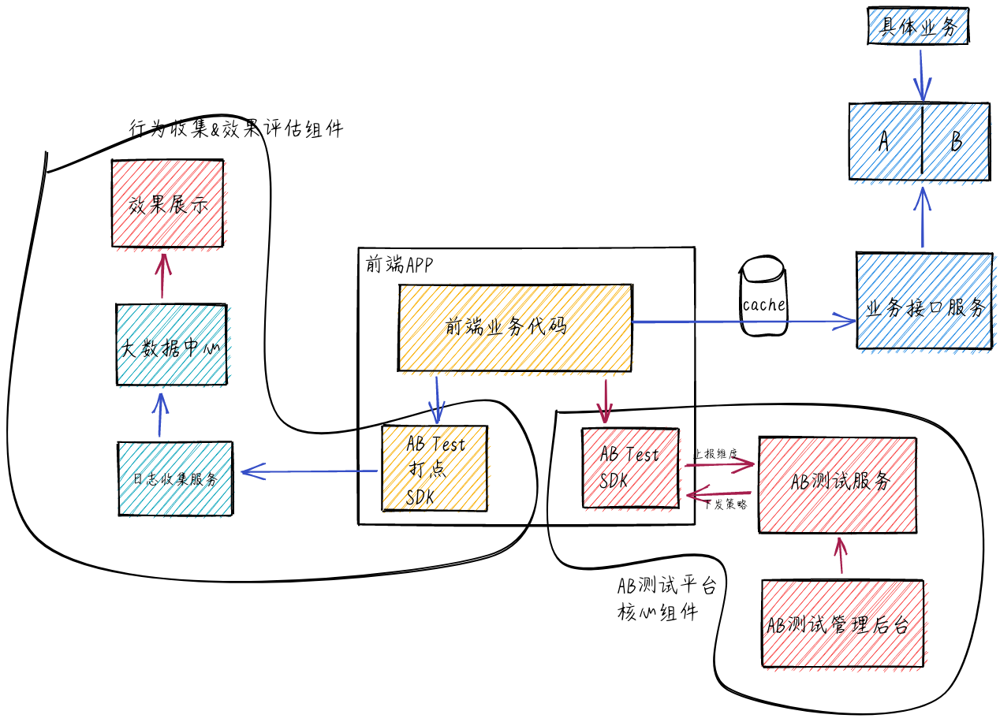
微博采用该方案
该方案的好处是通过统一的 SDK 来对接 AB 分组服务，前端业务代码简单调用 SDK 的方法就可以，开发效率高。不好的点是，如果 AB 测试业务有调整，需要升级 SDK，较麻烦，同时，如果公司有 iOS、Android、PC 等多个业务的话，需要开发多套 SDK，维护成本较大。
在后端业务层增加相关组件来做 AB 测试
- AB 两组对比测试业务分别部署在不同的服务器，通过构建一层统一的 router 来分发流量。
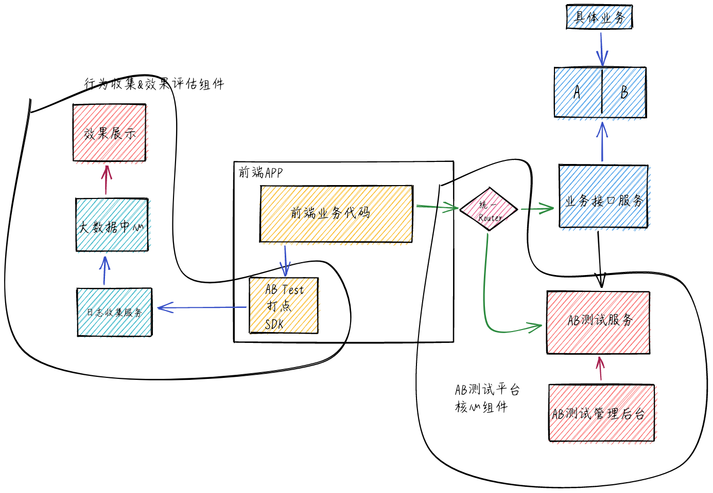
谷歌，百度采用该方案
该方案的优点是模块化，router 解决所有与 AB 测试相关问题，对 AB 测试业务做调整不需要前端版本升级，只需要升级后端服务即可。但是 Router 层是整个 AB 测试的核心，需要具备高并发高可用的能力，否则出现问题会影响 AB 测试能力的发挥。
- 将 AB 两组对比测试业务实现逻辑写在同一个业务接口，全部业务逻辑在业务服务器完成。
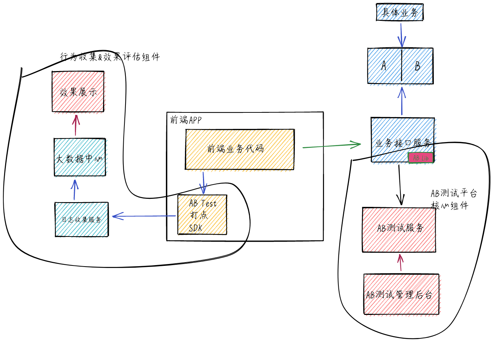
大众点评采用该方案
该方案当 AB 测试调整时也不需要前端做升级, 只需要修改 AB lib 包就可以了。该方案最大的缺点是如果公司采用多种开发语言做业务接口服务，需要每种开发语言维护一套 AB lib 库，维护成本较高。另外 AB 测试逻辑调整需要升级 AB lib 包时，需要对所有线上接口做升级，明显增加了风险。同时，在接口服务中整合 AB lib 与 AB 测试服务交互，增加了接口服务的复杂度，如果 AB 测试服务有问题，可能会影响接口功能或者性能。
推荐系统如何测试与评估
推荐算法接入 AB 测试框架的架构
针对推荐系统(推荐算法、搜索算法、精准投放、精准运营等) 这种纯算法类的业务，通过在算法业务层跟 AB 测试服务交互来实现 AB 测试能力，不需要前端和接口层做任何处理
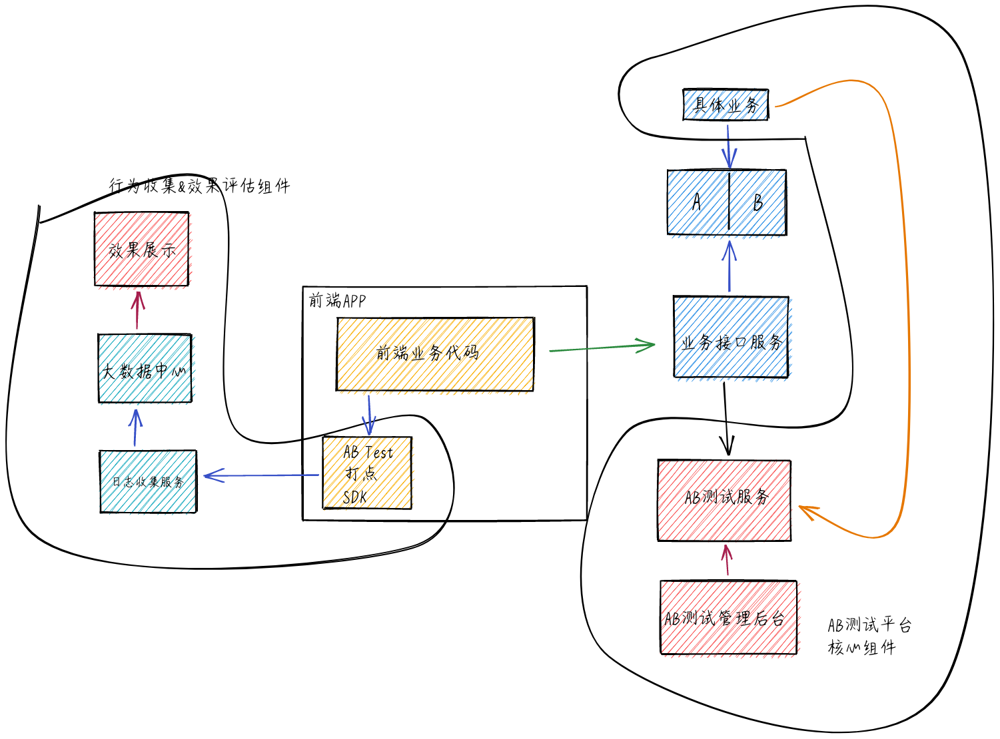
前端和接口层不做任何处理，只需在业务中实现 AB 测试能力，并且不需要根据 AB 两组分别对全量用户计算推荐结果，也不需要为全量用户分别存储 AB 两个算法的推荐结果，大大减少计算时间和存储开销。
推荐算法接入 AB 测试框架的业务流
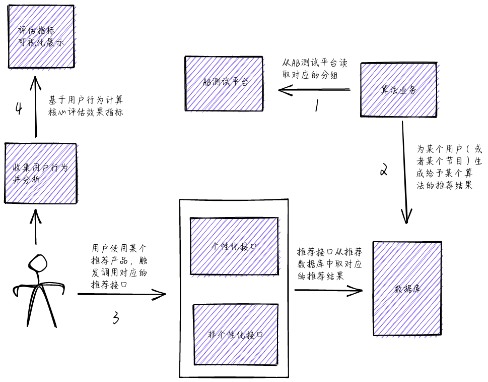
附-参考文章
https://www.infoq.cn/article/tmall-app-ab-test
http://pingguohe.net/2018/02/23/virtualview-ios-1.2.html
https://www.infoq.cn/article/lCTiIpkrh-lPl9pitKhf
http://www.woshipm.com/pd/1692294.html